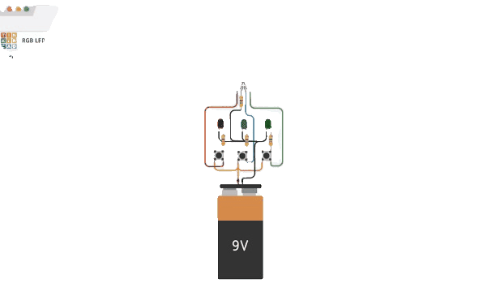

Videos de Apoyo para Aprender Robótica
Mira estos videos para complementar tu aprendizaje y entender mejor los conceptos.
¿Qué es la Robótica?

Un video introductorio sobre el mundo de la robótica.
Partes de un Robot

Aprende las partes de un robot.
Construyendo tu Primer Robot
Guía paso a paso para construir tu primer robot.
Mano Robótica de Cartón para niños

Los niños dan sus primeros pasos en el mundo de la ingeniería y la creatividad.
Programación con Scratch
Aprende los fundamentos de la programación usando Scratch.
Diseña tu robot con TINKERCAD
Descubre cómo los robots impactan nuestra vida cotidiana en diferentes aspectos.